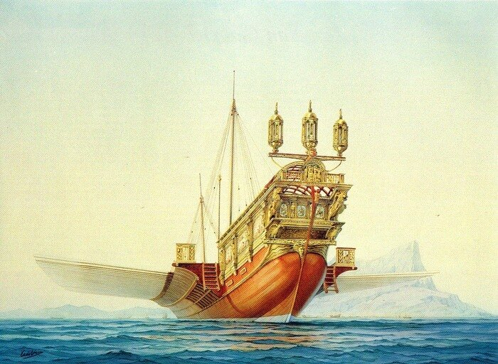

Из всех изобретений и усовершенствований, которых достигли ум и усердие человека, видимо, ни одно не является настолько универсально полезным, плодотворным и необходимым, как искусство мореплавания.
Локк Всеобщая история мореплавания
